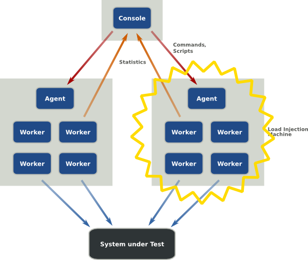

.front-page # Performance testing with The Grinder ## A Simple Introduction to Web Performance Testing ROOTS 2012 Espen H. Halvorsen / Kjetil Valle 10/05/2012 --- .agenda # Agenda * Introduction * Grinder 101 * Tasks --- # Introduction TODO Espen: Who are we? why does performance testing matter? --- # Introduction TODO Espen: Overview of what Grinder is. Main features: - A Java load testing framework. - Supports distributed testing using many load injector machines. - Freely available under a BSD-style open-source license. - Flexible scripting using Jython. For more, check out the [feature page](http://grinder.sourceforge.net/g3/features.html). --- # Grinder 101 The Grinder framework is comprised of three types of processes (or programs): 1. *Worker processes*: Interprets test scripts and performs the tests using a number of parallel *worker threads*. 1. *Agent processes*: Long running process that starts and stops worker processes as required. 1. *The Console*: Coordinates agent processes, and collates and displays statistics. --- # Grinder 101 .center[ <img alt="Overview of the Grinder framework" src="./images/grinder-overview.png"/ style="width: 70%;"> ] --- # Grinder 101 .center[  ] --- # Grinder 101 ### Tests and test scripts The tests are defined in *test scripts*, which are run by the worker threads. A *test* is a unit of work for which Grinder record statistics. Each test has a description, and an unique identification number. Different actions, e.g. web page requests, can be recorded against the same test, in which case Grinder will aggregate the results. --- # Grinder 101 ### Test configuration Each Grinder agent is configured from a *properties*-file. * Default is `grinder.properties`, which is used unless one is specified at startup. * Used for configuring everything from logging to the number of worker processes/threads. * Specifies which *test script* to run, and how many times. * Can also contain custom properties for use within the test scripts. --- # Grinder 101 ### Output Grinder outputs test results to files. *example output* --- Example of a simple test script: .python from net.grinder.script import Test def some_function(): print "Hello workshop :)" class TestRunner: def __init__(self): self.test = Test(1, "test description").wrap(some_function) def __call__(self): self.test() --- .middle.center # Tasks time for some hands-on practice --- # Task 1: Measure URL request time 1. Create a `Test` object with number and description 2. Wrap a `HTTPRequest` with the the test object. 3. Make grinder do a HTTP GET request to some URL every time the `__call__` method is invoced. For help getting started, review the [example script](https://github.com/kvalle/grinder-workshop/blob/master/example/example.py) and Grinder's [script gallery](http://grinder.sourceforge.net/g3/script-gallery.html). --- # Solution 1 TODO --- .middle.center # Questions?